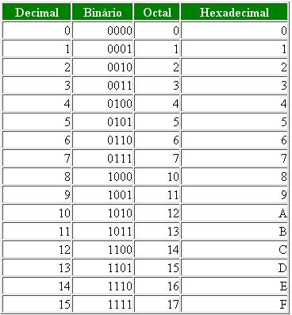

TDE de Experiência Criativa: Site Pessoal
Seja Bem-vindo, eu me chamo Mohamad Kassem Diab e esse é meu portfólio PUCPR relacionado ao meu primeiro período do curso de ciência da computação de 2023, turma B.
Neste portfólio vou mostrar as minhas experiências e meu processo de aprendizado como aluno da PUCPR. Ele incorporará as diciplinas de Raciocínio Algorítimico, Experiênicia Criativa, Filososfia, Lógica Matemática e Cyberfísica.
Experiência Criativa: Navegando na Computação
A disciplina de Experiência Criativa: Navegando na Computação é ministrada pelos professores Luiz, Dalton e Andreza. Ela é uma disciplina prática que envolve a criação de quatro projetos, explorando diferentes aspectos e técnicas da computação. Durante o curso, os alunos têm a oportunidade de aplicar seus conhecimentos teóricos em projetos concretos, desenvolvendo habilidades práticas e criativas. Os projetos abrangem diversas áreas da computação, proporcionando aos alunos uma experiência abrangente e enriquecedora no campo da ciência da computação.
Projeto 1 | Um Jogo:
Por meio do uso do Construct 3, desenvolvemos um jogo extremamente empolgante, em grupo constituído de 10 membros, no qual os jogadores são desafiados a digitar as letras de clássicos do rock enquanto evitam projéteis inimigos. A proposta do jogo é envolver os jogadores em uma experiência divertida e dinâmica, combinando elementos de digitação precisa e habilidade para desviar dos obstáculos.
No jogo, os jogadores são imersos em um ambiente musical, onde os clássicos do rock são tocados ao fundo, proporcionando uma trilha sonora envolvente. Enquanto as músicas tocam, letras específicas surgem na tela e os jogadores devem digitá-las rapidamente para derrotar os inimigos na tela e avançar no jogo. No entanto, eles também precisam estar atentos aos projéteis inimigos que são lançados em sua direção, exigindo reflexos rápidos para desviar e evitar colisões. Apresentamos o projeto em sala e explicamos o funcionamento do jogo.
Projeto 2 | Um aplicativo multimídia:
Tivemos a oportunidade de desenvolver um aplicativo multimídia, em um grupo de 9 pessoas, utilizando a linguagem JavaScript no ambiente do Processing. Nesse projeto, criamos um quiz para revelar a personalidade dos participantes e determinar o tipo de gato que melhor os representa.

Mini Projeto | Um site sobre Curitiba:
Como parte de um projeto colaborativo com a turma, tivemos a oportunidade de contribuir para a criação de um site sobre Curitiba. Nosso grupo foi encarregado de desenvolver o conteúdo relacionado ao tema academia. Trabalhamos em conjunto para fornecer informações relevantes e interessantes sobre academias na cidade, visando oferecer aos visitantes uma visão abrangente sobre o tema.
Projeto 3 | Um site promovendo o turismo de Colombo-PR:
Durante o projeto, tivemos a oportunidade de criar um aplicativo web/site com o objetivo de promover o turismo de uma lista de cidades do Paraná. Escolhemos a cidade de Colombo como nosso foco. Além de apresentar informações sobre a história e economia da cidade, nos dedicamos a resolver problemas e buscar soluções para impulsionar a atividade turística local. Também exploramos num aspecto imaginário, incorporando elementos criativos para despertar o interesse dos visitantes e incentivar a exploração e descoberta dos encantos de Colombo.
TDE | Página Web Pessoal
Para encerrar, o último trabalho consistiu na criação de um site pessoal, no qual tínhamos como objetivo retratar e compartilhar nossa jornada educacional durante o semestre na PUCPR. Fomos orientados a programar o site, abordando de forma personalizada os diversos aspectos do nosso período de estudos, experiências e conquistas acadêmicas. Através desse projeto, tivemos a oportunidade de destacar nosso percurso educacional de forma única e expressar nossa identidade e crescimento durante essa etapa na universidade.
Filosofia
A disciplina de Filosofia é ministrada pela professora Darli de Fátima Sampaio e abrange uma ampla gama de filósofos e correntes de pensamento. Durante o curso, exploramos diversos pensadores e suas contribuições para a compreensão do mundo e da existência humana. Sob a orientação da professora, mergulhamos em diferentes vertentes filosóficas, enriquecendo nosso conhecimento e perspectivas sobre questões fundamentais da vida.
A histórias das universidades:
Ao iniciar o estudo sobre a história das universidades, exploramos as origens desse importante sistema educacional. Aprendemos que, em tempos passados, o conhecimento acessível ao público era limitado às escolas monásticas. No entanto, à medida que a sociedade demandava profissionais qualificados e os jovens buscavam ampliar seu conhecimento, surgiram as primeiras universidades. Essas instituições foram fundadas com o propósito de oferecer uma educação mais abrangente e diversificada, proporcionando oportunidades de aprendizado e formação para aqueles que aspiravam ao conhecimento acadêmico.
Textos para estudo:
Durante o decorrer da disciplina, tivemos a oportunidade de explorar uma ampla gama de textos de diversos pensadores, abordando uma variedade de temas. Entre esses textos, podemos citar as Cartas de Clemento Juliato, que foram objeto de apresentações, bem como as reflexões de Paulo Freire sobre o ato de estudar, estudamos sobre o texto "O existencialismo é um humanismo" de Sartre, as considerações de Byung Chul Han acerca da sociedade do cansaço e as análises de Hannah Arendt sobre a condição humana. Além dessas leituras instigantes, também nos aprofundamos no esclarecimento de Kant, que nos fez refletir sobre a razão e a iluminação como caminhos para a emancipação intelectual. E, não menos importante, abordamos o tema das fake news, explorando seus efeitos e consequências na sociedade atual.
Essa diversidade de leituras enriqueceu nossa jornada acadêmica, proporcionando-nos uma ampla compreensão dos desafios e questionamentos presentes em diferentes esferas do conhecimento.
Grande parte dos trabalhos foram feitos na plataforma Socrative, que se tornou uma ferramenta fundamental para realizar atividades relacionadas aos conteúdos que estudamos. Essas atividades consistiam em uma série de perguntas abordando os assuntos que acabávamos de ler, incluindo alguns dos textos filosóficos discutidos em sala de aula. O objetivo era avaliar nosso entendimento da matéria por meio dessas perguntas.
Jean-Paul Sartre e Paulo Freire
Exploramos os textos de Jean-Paul Sartre e Paulo Freire durante nossos estudos. Durante essa etapa, nos aprofundamos nas obras desses importantes pensadores e refletimos sobre suas ideias e contribuições para a compreensão da condição humana e da educação. Analisamos as perspectivas existencialistas de Sartre, que enfatizam a liberdade e a responsabilidade individual na construção do sentido da vida. Também estudamos as concepções de Paulo Freire sobre a educação libertadora, destacando a importância da conscientização e da transformação social por meio da prática educacional.

Ivo Clemente Juliatto:
Realizamos uma apresentação dedicada às Cartas de Clemente Juliatto. Durante essa atividade, tivemos a oportunidade de explorar e compartilhar nossas análises e reflexões sobre suas cartas.
Apresentação no Canva
Immanuel Kant
Exploramos o texto "O que é Esclarecimento" de Immanuel Kant em nossos estudos e posteriormente fomos avaliados em uma prova relacionada a esse conteúdo. Durante nosso estudo, analisamos as principais ideias apresentadas por Kant em relação ao esclarecimento, sua definição e seu propósito na busca pelo conhecimento e pela autonomia intelectual. Através da prova, demonstramos nosso entendimento sobre as perspectivas de Kant e nossa capacidade de aplicar suas concepções em questões e análises críticas.

Byung-Chul Han e Hannah Arendt
Realizamos uma apresentação abordando as obras "Sociedade do cansaço" de Byung-Chul Han e "A condição humana" de Hannah Arendt. Durante nossa exposição, exploramos os principais conceitos e reflexões presentes em cada obra, destacando as análises de Han sobre a sociedade contemporânea marcada pelo excesso de estímulos e pela exaustão constante. Além disso, discutimos as reflexões de Arendt sobre a natureza da condição humana, enfatizando sua visão sobre a importância da ação política e do espaço público na formação da identidade humana.
TDE | Projeto de Vida Universitária
O Trabalho de Desenvolvimento Educacional (TDE) de filosofia consistiu em três atividades abordando diferentes tópicos:
Yuval Harari: "21 lições para o século 21": A primeira parte do TDE envolveu a leitura de uma parte do livro de Harari. Em seguida, fomos solicitados a escrever um texto que analisasse os pontos positivos e negativos de nossa experiência educacional até o momento, refletisse sobre maneiras de potencializar o processo de ensino-aprendizagem na universidade e utilizasse argumentos do texto sugerido.
Stephen Hawking: "A inteligência artificial vai nos superar?": A segunda atividade consistiu na leitura do texto de Stephen Hawking sobre inteligência artificial. Nela, fomos desafiados a escrever um texto reflexivo sobre nossa carreira profissional, levando em consideração o cenário atual e analisando os possíveis impactos das Inteligências Artificiais nessa área, utilizando argumentos do texto de Hawking.
Trilha Universitária: Por fim, tivemos a opção de realizar um projeto que planejasse nosso percurso acadêmico com base nas trilhas do Programa Vida Universitária. Podíamos escolher entre escrever um texto, criar um organograma ou um mapa mental. Optei por fazer um mapa mental que abordasse meu progresso na universidade ao longo do ano e minhas perspectivas futuras dentro dela.
Fundamentos de Sistemas Ciberfísicos
A disciplina de Sistemas Cyberfísicos, ministrada pelo professor Andrey Cabral, tem como objetivo capacitar os alunos a estabelecer conexões entre arquiteturas, redes, sistemas operacionais e computação em nuvem. Durante o curso, adquirimos habilidades para resolver problemas complexos, integrando de forma eficiente configurações de hardware e software em aplicações do mundo físico. Ao final da disciplina, estamos aptos a aplicar nossos conhecimentos para solucionar desafios práticos relacionados à interseção entre o mundo digital e físico.
Ao longo da disciplina, o aprendizado foi conduzido através de formativas, que consistiam em listas de exercícios teóricos de múltipla escolha. Essas listas foram numeradas de 1 a 8 e cada uma delas abordava um tópico específico do conteúdo estudado.
Conversão de bases numéricas:
Como primeiro tópico exploramos uma variedade de bases numéricas, como binárias, decimais, octais, hexadecimais, entre outras. Aprofundamos nosso conhecimento não apenas em como trabalhar com essas bases individualmente, mas também em como realizar a conversão entre elas. Essa habilidade nos permitiu compreender como diferentes sistemas numéricos funcionam e como representar e manipular números em cada uma deles.

Maquina de Turing e arquitetura de Von Neumann:
Exploramos os sistemas físicos a começar pela máquina de Turing, que é um modelo teórico capaz de realizar qualquer cálculo computacional possível. Através dela, compreendemos a lógica subjacente aos algoritmos e como eles podem ser formalizados. Além disso, estudamos a arquitetura de Von Neumann, que estabelece os princípios de como os computadores modernos são organizados. Estudamos suas estruturas internas, e compreendemos os princípios fundamentais que os tornam essenciais na computação.
Memória e Processamento:
Adquirimos conhecimentos sobre os elementos fundamentais do sistema computacionais modernos, como a unidade central de processamento (CPU), a memória principal e os dispositivos de entrada e saída. Compreendemos a interação e a importância desses componentes para o funcionamento adequado de um sistema computacional. Além disso, exploramos conceitos relacionados à execução de instruções, incluindo os ciclos de busca e execução, bem como o armazenamento e o acesso aos dados na memória. Essas informações nos proporcionaram uma visão mais abrangente sobre o funcionamento interno dos sistemas computacionais.
Sistemas Operacionais:
Foi proposto um trabalho sobre sistemas operacionais, que consistia na elaboração de um relatório abordando os sistemas operacionais de forma geral e de um sistema sorteado para cada grupo aprofundar. No meu caso, foi realizado um estudo sobre o Windows Server. Sendo o objetivo do trabalho de aprender sobre diferentes sistemas operacionais para diferentes plataformas.

Esp32:
Como parte do último projeto, foi solicitado que desenvolvêssemos um sistema físico utilizando uma placa ESP32 e dois sensores, além de programar sua funcionalidade em MicroPython. A implementação desse sistema ocorreu por meio de um simulador online. Em um grupo de 5 pessoas, optamos por criar um sistema de fechadura inteligente para portas que permite o travamento e destravamento remoto, além de contar com um sensor interno para abrir a porta automaticamente.
Raciocínio Algorítmico
A disciplina de Raciocínio Algorítmico, ministrada pela professora Marina, tem como objetivo principal ensinar os fundamentos da programação utilizando a linguagem Python. Durante a disciplina Aprendemos os conceitos essenciais para a construção de algoritmos e desenvolvem habilidades práticas na resolução de problemas por meio da programação. A ênfase está em compreender a lógica por trás dos algoritmos e aplicar esse conhecimento na escrita de programas eficientes em Python.;

PBLS e PJBLS
Durante o decorrer da disciplina, a dinámica ocorreu por meio de listas de exercícios denominadas PBLs. Essas listas iam do PBL 1 ao PBL 8 e cada uma delas explorava um novo aspecto de lógica de programação em Python. Dentro os conteudos administrados, trabalhamos com variáveis e constantes, tipos de dados, entrada e saída de dados, operações aritméticas, estruturas de repetição, controle e seleção, vetores, matrizes, funções, entre outros recursos da linguagem. Por outro lado, as PJBLs foram trabalhos mais desafiadores como a criação da lógica de jogos clássicos em Python como Jokempo, Jogo da Velha, e Batalha Naval. Esses projetos como um todo testaram nossas habilidade em aplicar os conhecimentos adquiridos de maneira mais aprofundada e construtiva.
Jokempo, Jogo da Velha e Batalha Naval:


Lógica Matemática
A disciplina de Resolução de Problemas com Lógica Matemática, ministrada pela professora Rafaela Otemaier, aborda o estudo da lógica matemática computacional. O objetivo dessa disciplina é aplicar conceitos lógicos na modelagem de problemas do mundo real, utilizando linguagem lógica para criar representações adequadas. Ao final do curso, os alunos desenvolvem habilidades para resolver problemas reais, selecionando métodos de dedução e provas matemáticas apropriados. A matéria foi administrada por meio de lista de exercícios para reforçar o conhecimento e provas para avaliar o desempenho na matéria, sendo um total de 7 listas e 3 provas.
Varias regras lógicas foram necessárias serem seguidas para a relização dos exercícios dentre elas estão:
Tabela Verdade:

Propriedades dos conectivos e Equivalências entre os conectivos:

Regras de Inferência e circuitos lógicos